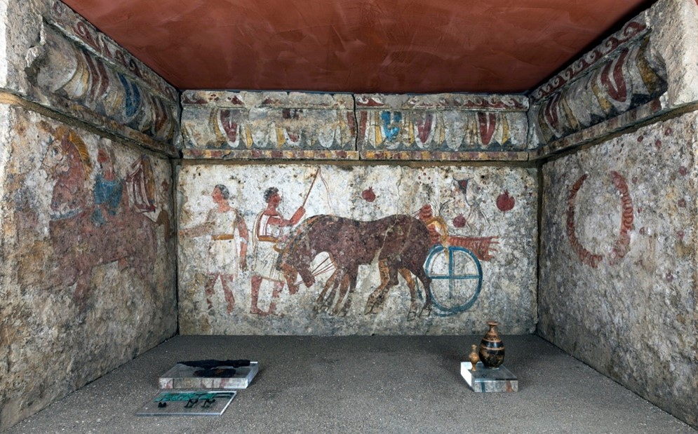
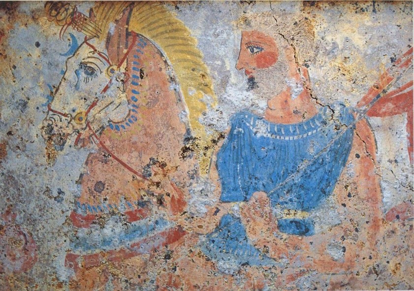
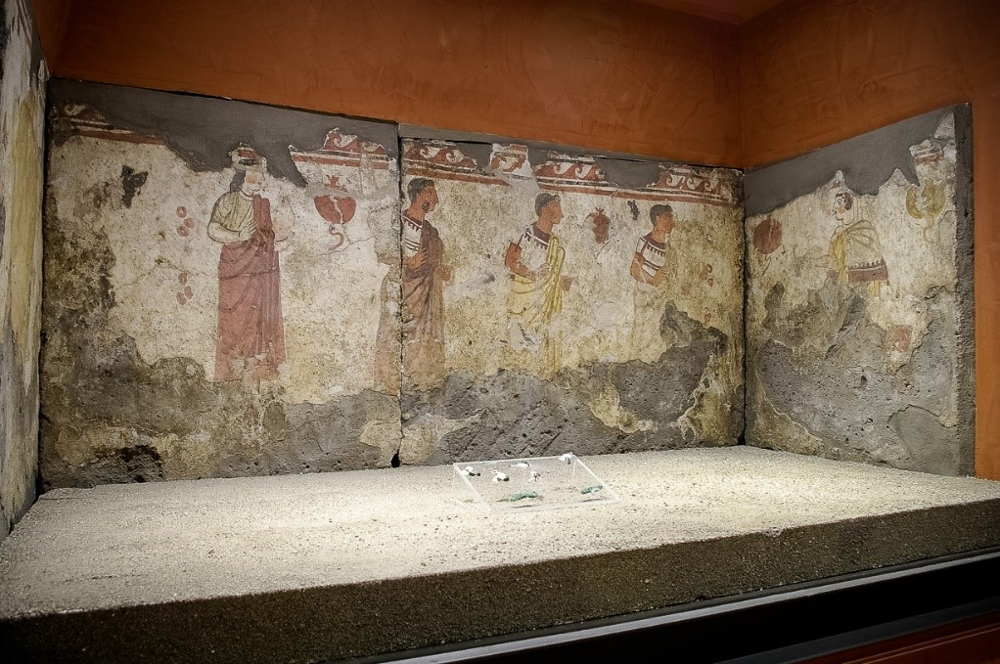

Home |
Le federazioni osche |
Localizzazione musei e siti |
Chi siamo |
Dove trovarci |
|
Tomba del guerriero (fine IV sec. a.C.)  Tomba a cassa con lastre dipinte, rinvenuta in località Garitta del Capitano (Sarno). Nella parete di sinistra, il defunto viene raffigurato come guerriero, secondo l’iconografia ben nota del “ritorno del guerriero”. |
Particolare della tomba del guerriero (fine IV secolo a.C.)  Particolare del guerriero a cavallo, raffigurato su una delle lastre dipinte della tomba cosiddetta “del guerriero”, risalente alla fine del IV secolo a.C. |
Tomba a cassa dipinta (fine IV secolo a.C.)  La tomba a cassa con lastre dipinte era una sepoltura femminile; fu rinvenuta a Sarno, in località Garitta del Capitano (fine IV secolo a.C.). |